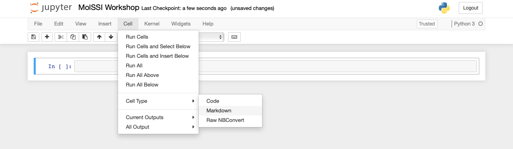
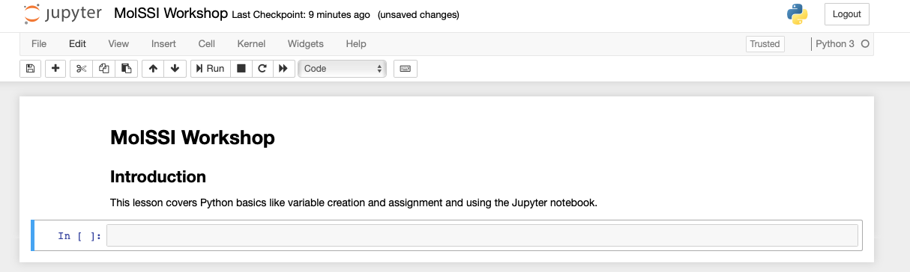

Introduction to Python#
Overview
Questions:
What is the Python programming language, and what is it used for?
What is the basic syntax of the Python programming language?
Objectives:
Assign values to variables.
Use the
printfunction to check how the code is working.Use multiple assignment to assign several variables at once.
Use a
forloop to perform the same action on all the items in a list.Use the append function to create new lists in
forloops.
What is Python and why use it?#
All of the software you use on a regular basis is created through the use of programming languages. Programming languages allow us to write instructions to a computer. There are many different programming languages, each with their own strengths, weaknesses, and uses. Some popular programming languages you might hear about are Javascript (used on the web - any website with interactive content likely uses javascript), Python (scientific programming and many other applications), C++ (high performance applications - much of computational chemistry, self-driving cars, etc), SQL (databases), and many more.
Python is a computer programming language that has become ubiquitous in scientific programming. The Python programming language was first introduced in the year 1991, and has grown to be one of the most popular programming languages for both scientists and non-scientists. According to the 2022 Stack Overflow Developer Survey, Python is the fourth most popular programming language. Compared to other programming languages, Python is considered more intutitive to start learning and is also extremely versatile. Python can be used to build web applications, interact with databases, and calculate and analyze data. Python also has many libraries focused on science and machine learning.
In computational chemistry, we will see that we can use Python to run and analyze our simulations. We can also use some of Python’s many libraries to fit data and predict properties.
Getting Started#
Our initial lessons will run python interactively through a Python interpreter. We will use an environment called a Jupyter notebook. The Jupyter notebook is an environment in your browser that can be used to write an execute Python code interactively. The setup page should have provided information on how to access a Jupyter notebook. Everything included in a code block is something you could type into your python interpreter and evaluate.
Setting up your Jupyter Notebook#
In the setup, you learned how to start a Jupyter notebook. Now, we will use the notebook to execute Python code. Jupyter notebooks are divided into cells. You run a Jupyter notebook one cell at a time. To execute a cell, click inside the cell and press shift+enter.
In the upper left corner, click where it says “Untitled” and change the name to “MolSSI Workshop”. We have now changed the name of the Jupyter Notebook.
Jupyter notebooks allow us to also use something called markdown in some cells. We can use markdown to write descriptions about our notebooks for others to read. It’s a good practice to have your first cell be markdown to explain the purpose of the notebook. Let’s do that in our first cell. Click inside the first cell, then on the top of the screen select Cell->Cell Type->Markdown (shown below).

Now, return to the cell and type the following:
# MolSSI Workshop
## Introduction
This lesson covers Python basics like variable creation and assignment and using the Jupyter notebook
In Markdown, we create headers using a single # sign. Using two (##) creates a subheader. After typing this into a cell, press shift+enter to evaluate. Now your notebook should look like the following.

Now that our notebook is set-up, we’re ready to start learning some Python!
Assigning variables#
Any Python interpreter can work just like a calculator. This is not very useful. Type the following into the next cell of your Jupyter notebook.
3 + 7
10
Here, Python has performed a calculation for us. To save this value, or other values, we assign them to a variable for later use. The syntax for assigning variables is the following:
variable_name = varaible_value
Let’s see this in action with a calculation. Type the following into the next cell of your Jupyter notebook.
deltaH = -541.5 #kJ/mole
deltaS = 10.4 #kJ/(mole K)
temp = 298 #Kelvin
deltaG = deltaH - temp * deltaS
Notice several things about this code. The lines that begin with # are comment lines. The computer does not do anything with these comments. They have been used here to remind the user what units each of their values are in. Comments are also often used to explain what the code is doing or leave information for future people who might use the code.
When choosing variable names, you should choose informative names so that someone reading your code can tell what they represent. Naming a variable temp or temperature is much more informative than naming that variable t.
We can now access any of the variables from other cells. Let’s print the value that we calculated. In the next cell,
print(deltaG)
-3640.7000000000003
Using Functions#
When we use print, we are using a function.
Functions are reusable pieces of code that perform certain tasks.
Examples include printing, opening files, performing a calculations, and many others.
Functions have a name that is followed by parenthesis containing the function inputs separated by commas (also called arguments).
function_name(argument1, argument2)
In the previous code block, we introduced the print function. Often, we will use the print function just to make sure our code is working correctly.
Note that if you do not specify a new name for a variable, then it doesn’t automatically change the value of the variable. For example if we typed
print(deltaG)
deltaG * 1000
print(deltaG)
-3640.7000000000003
-3640.7000000000003
Nothing happened to the value of deltaG. If we wanted to change the value of deltaG we would have to re-save the variable using the same name to overwrite the existing value.
print(deltaG)
deltaG = deltaG * 1000
print(deltaG)
-3640.7000000000003
-3640700.0000000005
There are situations where it is reasonable to overwrite a variable with a new value, but you should always think carefully about this. Usually it is a better practice to give the variable a new name and leave the existing variable as is.
print(deltaG)
deltaG_joules = deltaG * 1000
print(deltaG)
print(deltaG_joules)
-3640700.0000000005
-3640700.0000000005
-3640700000.0000005
Assigning multipe variables at once#
Python can do what is called multiple assignment where you assign several variables their values on one line of code. The following code block does the exact same thing as the previous code block.
#I can assign all these variables at once
deltaH, deltaS, temp = -541.5, 10.4, 298
deltaG = deltaH - temp * deltaS
print(deltaG)
-3640.7000000000003
Data Types#
Each variable is some particular type of data.
The most common types of data are strings (str),
integers (int), and floating point numbers (float).
You can identify the data type of any variable with the function type(variable_name).
type(deltaG)
float
You can change the data type of a variable like this. This is called casting.
deltaG_string = str(deltaG)
type(deltaG_string)
str
We could have created a variable as a string originally by surrounding the value in quotes "". It doesn’t matter if you use single or double quotes, the first quote just has to match the closing quote.
string_variable = "This is a string"
print(type(string_variable))
<class 'str'>
Lists#
Another common data structure in python is the list. Lists can be used to group several values or variables together, and are declared using square brackets [ ].
List values are separated by commas.
Python has several built in functions which can be used on lists.
The built-in function len can be used to determine the length of a list.
This code block also demonstrates how to print multiple variables.
# This is a list
energy_kcal = [-13.4, -2.7, 5.4, 42.1]
# I can determine its length
energy_length = len(energy_kcal)
# print the list length
print('The length of this list is', energy_length)
The length of this list is 4
If I want to operate on a particular element of the list, you use the list name and then put in brackets which element of the list you want. In python counting starts at zero. So the first element of the list is list[0].
# Print the first element of the list
print(energy_kcal[0])
-13.4
You can use an element of a list as a variable in a calculation.
# Convert the second list element to kilojoules.
energy_kilojoules = energy_kcal[1] * 4.184
print(energy_kilojoules)
-11.296800000000001
Slices#
Sometimes you will want to make a new list that is a subset of an existing list. For example, we might want to make a new list that is just the first few elements of our previous list. This is called a slice. The general syntax is
new_list = list_name[start:end]
When taking a slice, it is very important to remember how counting works in python. Remember that counting starts at zero so the first element of a list is list_name[0]. When you specify the last element for the slice, it goes up to but not including that element of the list. So a slice like
short_list = energy_kcal[0:2]
includes energy_kcal[0] and energy_kcal[1] but not energy_kcal[2].
print(short_list)
[-13.4, -2.7]
If you do not include a start index, the slice automatically starts at list_name[0]. If you do not include an end index, the slice automatically goes to the end of the list.
Check your understanding
What does the following code print?
slice1 = energy_kcal[1:]
slice2 = energy_kcal[:3]
print('slice1 is', slice1)
print('slice2 is', slice2)
Solution
The code prints
slice1 is [-2.7, 5.4, 42.1]
slice2 is [-13.4, -2.7, 5.4]
Repeating an operation many times: for loops#
Often, you will want to do something to every element of a list. The structure to do this is called a for loop. The general structure of a for loop is
for variable in list:
do things using variable
There are two very important pieces of syntax for the for loop. Notice the colon : after the word list. You will always have a colon at the end of a for statement. If you forget the colon, you will get an error when you try to run your code.
The second thing to notice is that the lines of code under the for loop (the things you want to do several times) are indented. Indentation is very important in python. There is nothing like an end or exit statement that tells you that you are finished with the loop. The indentation shows you what statements are in the loop. Each indentation is 4 spaces by convention in Python 3. However, if you are using an editor which understands Python, it will do the correct indentation for you when you press the tab key on your keyboard. In fact, the Jupyter notebook will notice that you used a colon (:) in the previous line, and will indent for you (so you will not need to press tab).
Let’s use a loop to change all of our energies in kcal to kJ.
for number in energy_kcal:
kJ = number * 4.184
print(kJ)
-56.0656
-11.296800000000001
22.593600000000002
176.1464
Now it seems like we are really getting somewhere with our program! But it would be even better if instead of just printing the values, it saved them in a new list. To do this, we are going to use the append function. The append function adds a new item to the end of an existing list. The general form of the append function is
list_name.append(new_thing)
for number in energy_kcal:
kJ = number * 4.184
energy_kJ.append(kJ)
print(energy_kJ)
---------------------------------------------------------------------------
NameError Traceback (most recent call last)
Cell In[17], line 3
1 for number in energy_kcal:
2 kJ = number * 4.184
----> 3 energy_kJ.append(kJ)
5 print(energy_kJ)
NameError: name 'energy_kJ' is not defined
This code doesn’t work because on the first iteration of our loop, the list energy_kJ doesn’t exist. To make it work, we have to start the list outside of the loop. The list can be blank when we start it, but we have to start it.
energy_kJ = []
for number in energy_kcal:
kJ = number * 4.184
energy_kJ.append(kJ)
print(energy_kJ)
[-56.0656, -11.296800000000001, 22.593600000000002, 176.1464]
Making choices: logic statements#
Within your code, you may need to evaluate a variable and then do something if the variable has a particular value. This type of logic is handled by an if statement. In the following example, we only append the negative numbers to a new list.
negative_energy_kJ = []
for number in energy_kJ:
if number < 0:
negative_energy_kJ.append(number)
print(negative_energy_kJ)
[-56.0656, -11.296800000000001]
Other logic operations include
equal to
==not equal to
!=greater than
>less than
<greater than or equal to
>=less than or equal to
<=
You can also use and, or, and not to check more than one condition.
negative_numbers = []
for number in energy_kJ:
if number < 0 or number == 0:
negative_numbers.append(number)
print(negative_numbers)
[-56.0656, -11.296800000000001]
To define what happens if the if statement is not met, you can use the else keyword.
negative_numbers = []
positive_numbers = []
for number in energy_kJ:
if number < 0 or number == 0:
negative_numbers.append(number)
else:
positive_numbers.append(number)
print("Negative numbers:", negative_numbers)
print("Positive Numbers: ", positive_numbers)
Negative numbers: [-56.0656, -11.296800000000001]
Positive Numbers: [22.593600000000002, 176.1464]
Exercise
The following list contains some floating point numbers and some numbers which have been saved as strings. Copy this list exactly into your code.
data_list = ['-12.5', 14.4, 8.1, '42']
Set up a for loop to go over each element of data_list. If the element is a string (str), recast it as a float. Save all of the numbers to a new list called number_list. Pay close attention to your indentation!
Solution
data_list = ['-12.5', 14.4, 8.1, '42']
number_list = []
for item in data_list:
if type(item) is str:
item = float(item)
number_list.append(item)
print(number_list)
Key Points
Python is a popular and versatile programming language.
The Jupyter notebook is an environment in your browser you can use to program in Python.
You assign variables in Python using
variable_name = variable_value.The data type of the variable is important when programming.
You can use lists to group many values together.
A
forloop is used to repeat an operation many times.You can make choices with
ifstatements.